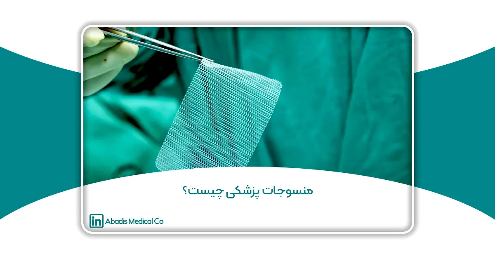

مقدمه
منسوجات پزشکی، به عنوان بخشی تخصصی از نساجیهای فنی، نقش حیاتی در مراقبتهای بهداشتی مدرن ایفا میکنند و بهطور عمده در بهبود درمان، مراقبت از بیماران و مدیریت کلی سلامت مورد استفاده قرار میگیرند. با پیشرفتهای سریع در صنعت بهداشت و درمان، تقاضا برای نساجیهای پزشکی به طور چشمگیری افزایش یافته است. این نوع نساجیها به طور خاص برای برآورده کردن نیازهای خاص بهداشتی طراحی شدهاند و ویژگیهایی نظیر سازگاری با بدن، دوام و استریلیتی که برای کاربردهای مختلف پزشکی ضروری هستند؛ را دارا هستند.
منسوجات پزشکی شامل دامنه وسیعی از محصولات هستند از بخیههای جراحی و پانسمانهای زخم گرفته تا دستگاههای کاشتنی و لباسهای محافظ، که برای بهبود نتایج درمانی و ارتقای کیفیت مراقبت طراحی شدهاند. تلاقی فناوری نساجی با علم پزشکی منجر به دستاوردهای چشمگیری شده است که امکان توسعه مواد را فراهم کرده است که نه تنها نیازهای حرفهایهای بهداشتی و بیماران را برآورده میکند بلکه در بسیاری از موارد، فراتر از آنها میرود.
در این مقاله، به بررسی و تعریف، دستهبندیها، مواد و فناوریهای مورد استفاده در منسوجات پزشکی خواهیم پرداخت. همچنین ویژگیها، کاربردها و لیست کاملی از این نساجیها را مورد بحث قرار خواهیم داد.
تعریف منسوجات پزشکی
منسوجات پزشکی به دستهای از محصولات نساجی اطلاق میشود که بهطور خاص برای استفاده در کاربردهای پزشکی و بهداشتی طراحی و مهندسی شدهاند. این منسوجات به گونهای توسعه یافتهاند که نیازهای سختگیرانه محیطهای بهداشتی، از جمله سازگاری با بدن، دوام و قابلیت استریل شدن را برآورده کنند. منسوجات پزشکی شامل طیف گستردهای از مواد مانند پارچههای بافتهشده، غیربافته و بافتنی هستند که در کاربردهای مختلف پزشکی از جمله مراقبت از زخم، بخیههای جراحی، ایمپلنتها، لباسهای محافظ و محصولات بهداشتی به کار میروند. وظیفه اصلی منسوجات پزشکی، ارائه مزایای درمانی و حفاظتی است که ایمنی و سلامت بیماران و کادر حوزه بهداشت و درمان را تضمین میکند.
دستهبندیهای منسوجات پزشکی بر اساس زمینه استفاده
منسوجات پزشکی بهطور کلی بر اساس کاربردهای خاص خود در صنعت بهداشت و درمان به چند دسته تقسیم میشوند. این دستهبندیها به درک بهتر نقشهای متنوع منسوجات پزشکی، از مراقبت مستقیم از بیمار گرفته تا حمایت از متخصصان بهداشت و درمان، کمک میکند.
۱. غیرقابل کاشت (Non-Implantable Materials)
منسوجات پزشکی غیرقابل کاشت بر روی بدن استفاده میشوند اما وارد بدن نمیشوند. این منسوجات شامل محصولاتی مانند پانسمانهای زخم، باندها، چسب زخم و گاز استریل هستند. هدف این محصولات محافظت از زخمها، جذب مایعات و تسریع بهبود است که اغلب دارای ویژگیهایی مانند فعالیت ضد میکروبی برای جلوگیری از عفونتها هستند.
۲. قابل کاشت (Implantable)
منسوجات قابل کاشت درون بدن استفاده میشوند و به طور مستقیم با سیستمهای بیولوژیکی تعامل دارند. نمونههایی از این مواد شامل بخیههای جراحی، پیوندهای عروقی و رباطهای مصنوعی هستند. این منسوجات به گونهای طراحی شدهاند که با بدن سازگار باشند و واکنشهای نامطلوب را ایجاد نکنند، و اغلب زیستتخریبپذیر یا بهگونهای طراحی شدهاند که بهطور طبیعی با بافتهای بدن ادغام شوند.
۳. محصولات بهداشتی و مراقبتی (Healthcare And Hygiene Products)
این دسته شامل منسوجاتی است که برای اهداف بهداشتی و مراقبتی عمومی استفاده میشوند. اقلامی مانند شان و گان، ملحفههای بیمارستانی، لباسهای بیماران، ماسکهای صورت و دستمالهای بهداشتی در این گروه قرار میگیرند. این منسوجات معمولاً بهگونهای طراحی شدهاند که دوام، راحتی و قابلیت استریل شدن یا دور انداختن آسان را دارا باشند تا به حفظ بهداشت در محیطهای پزشکی کمک کنند.
۴. دستگاههای خارجبدنی (Extra Corporeal Devices)
منسوجات در این دسته در دستگاههایی استفاده میشوند که خارج از بدن عمل میکنند اما با آن تعامل دارند. نمونههایی از این دستگاهها شامل کلیههای مصنوعی (ماشینهای دیالیز) و ماشینهای قلب و ریه هستند. منسوجاتی که در این دستگاهها استفاده میشوند، باید استانداردهای بسیار سختگیرانهای از نظر سازگاری با بدن و فیلتراسیون را برآورده کنند، زیرا با خون و سایر مایعات بدن تماس دارند.
۵. لباسهای محافظ (Protective Clothing)
منسوجات مورد استفاده در لباسهای محافظ به منظور حفاظت از کارکنان بهداشتی و بیماران در برابر آلودگیها و مواد خطرناک طراحی شدهاند. این دسته شامل لباسهای جراحی، دستکشها، محافظهای صورت و پیشبندها میشود. این منسوجات معمولاً از موادی ساخته میشوند که مقاوم در برابر مایعات یا غیرقابل نفوذ هستند و در برابر عفونتها، مواد شیمیایی و سایر عوامل مضر محافظت میکنند.
۶. منسوجات هوشمند (Smart Medical Textiles)
دستهای نوظهور از منسوجات پزشکی که فناوریهای پیشرفتهای مانند حسگرها، الیاف رسانا و سایر اجزای الکترونیکی را در منسوجات سنتی ترکیب میکنند. این منسوجات میتوانند علائم حیاتی را نظارت کنند، داروها را تحویل یا حتی بهصورت لحظهای بازخوردی از وضعیت بیمار ارائه دهند. این دسته نمایانگر پیشروی و پیشرفت نوآوری در منسوجات پزشکی است که با راهحلهای سلامت دیجیتال ترکیب میکند.
این دستهبندیها تنوع و اهمیت منسوجات پزشکی را در بهداشت و درمان نشان میدهند و هر یک نقشی حیاتی در بهبود نتایج درمانی بیماران و محافظت از کارکنان بهداشتی دارند.
انواع منسوجات پزشکی بر اساس نوع ساختار پارچه
منسوجات پزشکی در انواع مختلفی ارائه میشوند که هر یک برای پاسخگویی به نیازهای خاص در محیطهای بهداشتی طراحی شدهاند. این منسوجات بر اساس ساختار، فرآیند تولید و کاربرد مورد نظرشان دستهبندی میشوند. در ادامه به معرفی انواع اصلی منسوجات پزشکی میپردازیم:
۱. منسوجات بافتهشده (Woven Fabric)
منسوجات بافتهشده با درهم تنیدن دو مجموعه نخ در زوایای قائم تولید میشوند. این منسوجات به دلیل استحکام، دوام و پایداری ابعادی خود شناخته میشوند. در حوزه پزشکی، منسوجات بافتهشده بهطور گسترده در لباسهای جراحی، پردههای جراحی و انواع خاصی از باندها استفاده میشوند. ساختار بافتهشده محکم این منسوجات، یک مانع مؤثر در برابر آلودگیها فراهم میکند و آنها را برای لباسهای محافظ و محصولات قابل استریلسازی ایدهآل میسازد.
۲. منسوجات بیبافت (Nonwoven Structure)
منسوجات بیبافت از طریق اتصال یا فشردن الیاف به یکدیگر تولید میشوند و نیازی به بافت یا بافتن ندارند. این منسوجات سبک، مقرونبهصرفه و از نظر بافت و ضخامت بهراحتی قابل تنظیم هستند. منسوجات بیبافت بهطور گسترده در محصولات پزشکی یکبار مصرف مانند ماسکهای جراحی، گان و شان جراحی، حوله یکبار مصرف، لباس و زیر انداز بیمار و پانسمان استفاده میشوند. همچنین در محصولات مراقبت از زخم که خاصیت جذب آنها بسیار مورد توجه است، از این منسوجات استفاده میشود.
۳. منسوجات بافتنی (Knitted Textiles)
منسوجات بافتنی از طریق درهمپیچیدن نخها تولید میشوند که به آنها انعطافپذیری و نرمی منحصربهفردی میبخشد. این منسوجات اغلب در کاربردهای پزشکی که نیاز به انعطافپذیری و راحتی دارند، مانند لباسهای فشاری، باندهای الاستیک و حمایتهای ارتوپدی استفاده میشوند. طبیعت انعطافپذیر منسوجات بافتنی امکان ایجاد تناسب نزدیک با بدن را فراهم میکند که برای کاربردهایی که نیاز به حرکت و راحتی دارند، ایدهآل است.
۴. منسوجات بافته شده به صورت طنابی (Braided Textiles)
منسوجات تابیدهشده با درهمتنیدن سه یا چند نخ بهصورت مورب تولید میشوند. این منسوجات به دلیل استحکام کششی بالا و انعطافپذیری خود شناخته میشوند. در حوزه پزشکی، منسوجات بافته شده طنابی عمدتاً در بخیههای جراحی استفاده میشوند. ساختار تابیده این منسوجات ترکیبی از استحکام و انعطافپذیری را فراهم میکند که در کاربردهایی که نیاز به مواد محکم اما قابلانعطاف دارند، حیاتی است.
۵. منسوجات کامپوزیت (Composites)
منسوجات کامپوزیت از ترکیب دو یا چند نوع مختلف از الیاف یا مواد تولید میشوند تا ویژگیهای عملکردی خاصی را به دست آورند. در منسوجات پزشکی، کامپوزیتها اغلب برای بهبود ویژگیهایی مانند استحکام، دوام و سازگاری با بدن استفاده میشوند. بهعنوان مثال، مواد کامپوزیت در پروتزها به کار میروند، جایی که تعادلی بین ساختار سبک و استحکام مکانیکی ایجاد میکنند، و همچنین در دستگاههای کاشتنی که نیاز به انعطافپذیری و مقاومت دارند.
هر یک از این انواع منسوجات پزشکی نقش حیاتی در بهداشت و درمان دارند و به ایمنی، راحتی و درمان مؤثر بیماران کمک میکنند. با بهرهگیری از ویژگیهای منحصربهفرد این منسوجات، ارائهدهندگان خدمات بهداشتی میتوانند نتایج بهتری را رقم زده و کیفیت مراقبتهای ارائهشده را بهبود بخشند.
ویژگیهای منسوجات پزشکی
منسوجات پزشکی دارای مجموعهای از ویژگیهای منحصر به فرد هستند که آنها را برای استفاده در محیطهای بهداشتی و درمانی مناسب میسازد. این منسوجات باید استانداردهای سختگیرانهای را رعایت کنند تا ایمنی، راحتی و اثربخشی محصولاتی که در آنها استفاده میشوند، تضمین شود. در ادامه به برخی از ویژگیهای کلیدی منسوجات پزشکی میپردازیم:
۱. زیستسازگاری: زیستسازگاری به توانایی یک ماده در انجام وظایف خود بدون ایجاد واکنش منفی در بدن اشاره دارد. منسوجات پزشکی باید غیرسمی، غیرآلرژیک و غیرسرطانی باشند تا از هرگونه تعامل منفی با بافتها یا مایعات بدن جلوگیری شود. این ویژگی برای موادی که به طور مستقیم با بدن در تماس هستند، مانند پانسمانهای زخم، بخیهها و وسایل قابل کاشت، بسیار حیاتی است.
۲. قابلیت استریل شدن: قابلیت استریل شدن به توانایی یک ماده در تحمل فرآیندهای استریلیزاسیون بدون تخریب یا کاهش عملکرد آن اشاره دارد. منسوجات پزشکی اغلب قبل از استفاده نیاز به استریل شدن دارند تا از عفونت جلوگیری شود. این منسوجات باید قادر باشند روشهای مختلف استریلیزاسیون، مانند اتوکلاو کردن، تابش گاما یا درمان با اتیلن اکساید، را بدون از دست دادن ساختار یا عملکرد خود تحمل کنند.
۳. قابلیت جذب: قابلیت جذب به توانایی جذب و نگهداری مایعات مانند خون، ترشحات یا سایر مایعات بدن اشاره دارد. جذب بالا برای محصولاتی مانند پانسمانهای زخم، اسفنجهای جراحی و پوشک که در آنها مدیریت رطوبت و مایع حیاتی است، حیاتی است. ظرفیت جذب این منسوجات به حفظ محیطی خشک و تمیز کمک کرده و باعث تسریع در بهبود و کاهش خطر عفونت میشود.
۴. دوام: دوام به توانایی یک منسوج در تحمل فرسایش و استفاده مکرر بدون تخریب اشاره دارد. منسوجات پزشکی، بهویژه آنهایی که در اقلام قابل استفاده مجدد مانند شان و گانهای جراحی، ملحفهها و لباسهای بیمار به کار میروند، باید بادوام باشند تا بتوانند شستشو و استریلیزاسیون مکرر را بدون از دست دادن یکپارچگی یا عملکرد خود تحمل کنند.
۵. انعطافپذیری و نرمی: انعطافپذیری به توانایی در خم شدن یا کشیده شدن بدون پاره شدن اشاره دارد، در حالی که نرمی به راحتی حاصل از تماس منسوج با پوست اشاره دارد. انعطافپذیری و نرمی برای منسوجات پزشکی که با پوست در تماس مستقیم هستند، مانند باندها، لباسهای فشاری و لباسهای بیمار بسیار حیاتی است. این ویژگیها اطمینان حاصل میکنند که منسوجات با خطوط بدن تطابق داشته و راحتی را فراهم کرده و تحریکات پوستی را به حداقل میرسانند.
۶. قابلیت عبور هوا: قابلیت تنفس به توانایی یک منسوج در اجازه دادن به عبور هوا و بخار رطوبت اشاره دارد. در کاربردهای پزشکی، قابلیت تنفس و عبور هوا به مدیریت رطوبت کمک میکند و خطر خیسی را کاهش داده و سلامت پوست را ترویج میکند. این ویژگی بهویژه در اقلامی مانند گانهای جراحی، پانسمانهای زخم و پوشک اهمیت دارد.
۷. خواص ضد میکروبی: خواص ضد میکروبی به توانایی یک پارچه در جلوگیری از رشد میکروارگانیسمهایی مانند باکتریها، قارچها و ویروسها اشاره دارد. منسوجات پزشکی با خواص ضد میکروبی برای کاهش خطر عفونت بسیار ضروری هستند، بهویژه در محیطهای بیمارستانی که خطر انتقال عفونت بالاست. درمانهای ضد میکروبی میتوانند به منسوجاتی که در مراقبت از زخم، پردههای جراحی و ملحفههای بیمارستانی استفاده میشوند، اعمال شوند تا عملکرد حفاظتی آنها را افزایش دهند.
۸. قابلیت کشسانی: قابلیت کشسانی به توانایی در کشیده شدن و سپس بازگشت به شکل اصلی خود اشاره دارد. قابلیت کشسانی در منسوجات پزشکی که نیاز به فیت شدن دقیق یا تطابق با حرکات بدن دارند، مانند باندهای فشاری، لباسهای پشتیبان کشسان و بریسهای ارتوپدی، اهمیت دارد. این ویژگی اطمینان میدهد که منسوجات پشتیبانی لازم را فراهم میکنند بدون اینکه حرکات را محدود کنند.
۹. شفافیت و قابلیت رؤیت در تصویربرداری: شفافیت به توانایی یک منسوج در عبور نور از آن اشاره دارد، در حالی که قابلیت رؤیت در تصویربرداری به توانایی منسوج در نمایان شدن در تصاویر اشعه ایکس اشاره دارد. در برخی از کاربردهای پزشکی، مانند پردههای جراحی یا پانسمانهای زخم، شفافیت میتواند برای بازرسی بصری بافتهای زیرین مفید باشد. قابلیت رؤیت در تصویربرداری در منسوجات قابل کاشت یا دستگاههای جراحی مهم است، جایی که در تصاویر اشعه ایکس برای نظارت یا حذف قابل تشخیص باشند؛ ضروری است.
ترکیب این ویژگیها اطمینان حاصل میکند که منسوجات پزشکی نیازهای دقیق کاربردهای بهداشتی را برآورده میکنند. با ترکیب این ویژگیها در طراحی و تولید منسوجات پزشکی، تولیدکنندگان میتوانند محصولاتی را ایجاد کنند که مراقبت از بیماران را ارتقا داده، ایمنی را تضمین کنند و نتایج درمانی را بهبود بخشند.
کاربردهای منسوجات پزشکی
منسوجات پزشکی نقش حیاتی در مراقبتهای بهداشتی مدرن دارند و راهحلهایی برای طیف گستردهای از کاربردهای پزشکی ارائه میدهند. این منسوجات تخصصی برای برآورده کردن نیازهای دقیق محیطهای پزشکی طراحی شدهاند و مزایای عملکردی و حفاظتی را فراهم میآورند. در ادامه به برخی از کاربردهای کلیدی منسوجات پزشکی میپردازیم:
۱. مراقبت از زخمها
- پانسمانهای زخم: منسوجات پزشکی به طور گستردهای در پانسمانهای زخم برای محافظت از زخمها، جذب ترشحات و تسریع روند بهبود استفاده میشوند. این پانسمانها میتوانند از مواد مختلفی مانند الیاف طبیعی (پنبه) یا الیاف مصنوعی (پلیاستر یا پلیاورتان) ساخته شوند. پانسمانهای پیشرفته ممکن است حاوی عوامل ضد میکروبی باشند یا به گونهای طراحی شده باشند که محیطی مرطوب برای تسریع بهبود فراهم کنند.
- باندها و کمپرسها: باندها، که از منسوجات الاستیک یا غیرالاستیک ساخته میشوند، برای پشتیبانی و تثبیت اندامهای آسیبدیده، کاهش ورم و محافظت از زخمها استفاده میشوند. کمپرسها، که معمولاً از منسوجات بسیار جاذب ساخته میشوند، برای اعمال فشار به منظور کنترل خونریزی یا کاهش التهاب به کار میروند.
۲. منسوجات جراحی
- گانها و پردههای جراحی: این منسوجات برای حفظ محیط استریل در حین جراحیها ضروری هستند. گانها و پردههای جراحی معمولاً از مواد غیر بافته و یکبار مصرف ساخته میشوند که به عنوان سد در برابر میکروارگانیسمها، مایعات و ذرات معلق عمل میکنند. این منسوجات باید سبک، قابل تنفس و مقاوم در برابر نفوذ مایعات و خون باشند.
- بخیههای جراحی: بخیهها برای بستن زخمها یا برشهای جراحی استفاده میشوند و معمولاً از مواد قابل جذب یا غیرقابل جذب ساخته میشوند. بخیههای قابل جذب، مانند آنهایی که از اسید پلیگلیکولیک یا اسید پلیلاکتیک ساخته شدهاند، به تدریج توسط بدن تجزیه میشوند، در حالی که بخیههای غیرقابل جذب، مانند آنهایی که از ابریشم یا نایلون ساخته شدهاند، پس از بهبودی زخم باید برداشته شوند.
۳. منسوجات قابل کاشت
- پیوندهای عروقی: پیوندهای عروقی برای ترمیم یا جایگزینی رگهای خونی آسیبدیده استفاده میشوند. این پیوندها معمولاً از مواد مصنوعی مانند داکرون (پلیاتیلن ترفتالات) یا پلیتترافلورواتیلن (ePTFE) ساخته میشوند که زیستسازگار بوده و دارای استحکام مکانیکی لازم برای تحمل جریان خون هستند.
- مشهای جراحی: مشهای جراحی در جراحیهایی مانند ترمیم فتق، افتادگی اعضای لگنی و سایر تعمیرات بافت نرم استفاده میشوند. این مشها معمولاً از موادی مانند پلیپروپیلن یا پلیاستر ساخته میشوند که استحکام و دوام لازم را فراهم کرده و در عین حال اجازه میدهند بافتها به آنها جوش بخورند.
- داربستهای مهندسی بافت: منسوجات پزشکی همچنین به عنوان داربستها در مهندسی بافت استفاده میشوند، جایی که ساختار لازم برای رشد سلولها و تشکیل بافتهای جدید را فراهم میآورند. این داربستها میتوانند از پلیمرهای تجزیهپذیر ساخته شوند که به تدریج تجزیه شده و بافت جدید جایگزین آنها میشود.
۴. دستگاههای خارج از بدن
- غشاهای دیالیز: در همودیالیز، غشاهای ساخته شده از منسوجات پزشکی برای فیلتر کردن مواد زائد از خون بیماران با نارسایی کلیه استفاده میشوند. این غشاها باید زیستسازگار و دارای نفوذپذیری انتخابی باشند تا اجازه دهند مواد زائد عبور کنند در حالی که پروتئینها و سلولهای خونی لازم حفظ شوند.
- دستگاههای قلب و ریه: منسوجات پزشکی همچنین در ساخت قطعات دستگاههای قلب و ریه استفاده میشوند که از آنها برای پشتیبانی از گردش خون و تنفس در حین جراحیها استفاده میشود. منسوجات مورد استفاده در این دستگاهها باید بسیار بادوام، زیستسازگار و قادر به تحمل فرآیندهای استریلیزاسیون باشند.
۵. پوشش نفوذ ناپذیر
- لباسهای حفاظتی: کارکنان بهداشتی به لباسهای حفاظتی ساخته شده از منسوجات پزشکی برای محافظت از خود در برابر قرارگیری در معرض عوامل عفونی و مواد خطرناک وابستهاند. این شامل اقلامی مانند گانهای ایزوله، دستکشها و ماسکهای صورت است. این منسوجات باید بتوانند در برابر مایعات، آئروسلها و ذرات معلق مانع ایجاد کنند و در عین حال قابل تنفس و راحت برای استفاده طولانی مدت باشند.
- ملحفهها و پارچههای بیمارستانی: منسوجات پزشکی در ملحفههای بیمارستانی، مانند روبالشیها و پتویها، استفاده میشوند که باید بادوام، قابل شستشو و مقاوم در برابر آلودگی باشند. برخی از منسوجات ملحفهها با عوامل ضد میکروبی درمان میشوند تا خطر انتقال آلودگی در محیطهای بهداشتی کاهش یابد.
۶. محصولات بهداشتی
- پوشکها و محصولات بیاختیاری: منسوجات پزشکی در تولید پوشکها و محصولات بیاختیاری استفاده میشوند که نیاز به جذب بالا و ویژگیهای جذب رطوبت دارند. این محصولات به گونهای طراحی شدهاند که پوست را خشک نگهدارند و خطر تحریک یا عفونت را کاهش دهند.
- محصولات بهداشتی زنانه: محصولات بهداشتی زنانه، مانند نوار بهداشتی و تامپونها، از منسوجات پزشکی ساخته شدهاند که جذب و راحتی را فراهم میآورند. این محصولات معمولاً شامل موادی مانند پنبه، ریون و پلیمرهای فوقجاذب برای مدیریت جریان قاعدگی به طور مؤثر هستند.
۷. منسوجات هوشمند
- دستگاههای پزشکی قابل پوشیدن: پیشرفتهای فناوری به توسعه منسوجات هوشمند منجر شده است که میتوانند پارامترهای فیزیولوژیکی مانند ضربان قلب، دمای بدن و نرخ تنفس را نظارت کنند. این منسوجات با حسگرها و اجزای الکترونیکی یکپارچه شدهاند که دادهها را جمعآوری و به ارائهدهندگان خدمات بهداشتی منتقل میکنند، امکان نظارت مداوم بر بیماران را فراهم میآورند.
- سیستمهای تحویل دارو: منسوجات هوشمند همچنین به منظور تحویل داروها از طریق پوست به صورت کنترلشده توسعه یافتهاند. این منسوجات میتوانند برای رهاسازی دارو در زمانهای خاص یا به پاسخ به محرکهای فیزیولوژیکی خاص برنامهریزی شوند و روش درمانی غیرتهاجمی را ارائه دهند.
۸. درمان فشاری
- لباسهای فشاری: منسوجات پزشکی در تولید لباسهای فشاری که برای بهبود گردش خون و کاهش ورم در شرایطی مانند لنفادم و نارسایی وریدی مزمن طراحی شدهاند، استفاده میشود. این لباسها از مواد الاستیک ساخته شدهاند که فشار ثابتی به ناحیه آسیبدیده وارد میکنند.
- باندهای فشاری: این باندها برای درمان شرایطی مانند واریس، ترومبوز ورید عمقی و زخمهای پا استفاده میشوند. این باندها به گونهای طراحی شدهاند که فشارهای مختلفی را اعمال کنند و به مدیریت ورم و تسریع در بهبود کمک کنند.
تنوع کاربردهای منسوجات پزشکی نشاندهنده نقش حیاتی آنها در بهبود مراقبتهای بیمار، ارتقاء نتایج درمانی و حمایت از کارکنان بهداشتی است. با پیشرفت فناوری، دامنه منسوجات پزشکی به طور مداوم گسترش یافته و امکانات جدیدی برای نوآوری در مراقبتهای بهداشتی ارائه میدهد.
فهرست کامل محصولات منسوجات پزشکی
- بانداژها
- گازها
- چسبهای زخم
- هیدروژلها
- پانسمانهای آلژینات
- پانسمانهای فومی
- پانسمانهای غیربافته(گاز)
- پانسمانهای ضد میکروب
- پانسمانهای مهندسی بافت
- نخهای بخیه
- پیوندهای عروقی
- انواع مش های جراحی
- رباطهای مصنوعی
- پچهای قلبی
- داربستهای بافتی
- شان و گانهای جراحی
- ماسکهای صورت
- پرده جراحی(استریل دریپ)
- کلاه و پوشش کفش
- ملحفهها و روبالشیهای یکبار مصرف
- محصولات بیاختیاری
- لباسهای فشردهسازی
- بریسهای ارتوپدی
- آتلها
- جورابهای فشاری
- حمایتهای الاستیک
- فیلترهای دیالیز
- اکسیژناتورهای خون
- ریهها و قلب و کلیه مصنوعی
- تجهیزات محافظ شخصی (PPE)
- پارچههای ضد میکروب
- گانهای جراحی قابل استفاده مجدد
- مانیتورهای پوشیدنی سلامت
- منسوجات دارورسانی
- پارچههای حسگر فشار
- پارچههای الکتروکانداکتیو
- بانداژهای ضدباکتری
- لباسهای کنترل بو
- دستمالها و حولههای پزشکی
- لاینرهای پروتز
- باندهای الاستیک
- حمایتهای ارتوتیک
- نوار بهداشتی
- پوشکهای نوزاد
- پوشکهای بزرگسالان
- دستمالهای مرطوب
این دستهبندیها طیف گستردهای از محصولات را شامل میشوند که هرکدام نیازهای خاص پزشکی و بهداشتی را تامین میکنند. بسته به کاربرد، این منسوجات میتوانند یکبار مصرف یا چندبار مصرف باشند و اغلب تحت آزمایشهای دقیق برای ایمنی، اثربخشی و مطابقت با مقررات پزشکی قرار میگیرند.
نتیجهگیری
منسوجات پزشکی با ارائه راهکارهای نوآورانه به صنعت مراقبتهای بهداشتی، تحول بزرگی ایجاد کردهاند. این منسوجات تخصصی نقش حیاتی در بهبود مراقبت از بیماران ایفا میکنند و راحتی، حفاظت و کارایی بیشتری را فراهم میآورند. با پیشرفت در مواد و فناوری، منسوجات پزشکی همچنان در حال تحول هستند و امکانهای جدیدی را در حوزههایی مانند مراقبت از زخم، کاشتها و کنترل عفونت ارائه میدهند.
با رشد مداوم این صنعت، روندهای جدید مانند منسوجات هوشمند و مواد پایدار، نوآوریهای بیشتری را به همراه خواهند داشت. با این حال، این پیشرفتها چالشهای جدیدی را نیز به همراه میآورند که به چارچوبهای نظارتی تطبیقی و تحقیقات مداوم نیاز دارند.
در نتیجه، توسعه و بهبود مستمر منسوجات پزشکی، همراه با نظارت دقیق نظارتی، قطعاً به آینده مراقبتهای بهداشتی کمک خواهد کرد. با رعایت بالاترین استانداردهای ایمنی و عملکرد، منسوجات پزشکی همچنان به عنوان یکی از ارکان اصلی پیشرفتهای پزشکی باقی خواهند ماند و نتایج بیماران و کیفیت مراقبتهای ارائهشده در سراسر جهان را بهبود خواهند بخشید.
منابع
- Anand, S. C. (Ed.). (2006). Medical textiles and biomaterials for healthcare. CRC Press.
- Scott, R. A. (Ed.). (2005). Textiles for protection. Woodhead Publishing.
- Anahita Rohani Shirvan, Alireza Nouri. Advances in Functional and Protective Textiles (pp.291-333) http://dx.doi.org/10.1016/B978-0-12-820257-9.00013-8
- Kodgire, R. P., & Kamat, S. P. (2016). Medical textiles: Properties, applications, and future trends. Journal of Textile Science, 15(2), 45-58.
- Sharma, P., & Joshi, M. (2019). Development of antimicrobial medical textiles: Current status and future prospects. Materials Science and Engineering C, 102, 1025-1036. https://doi.org/10.1016/j.msec.2019.04.018
- Shirley Coyle, Dermot Diamond Medical applications of smart textiles
https://doi.org/10.1016/B978-1-78242-379-9.00010-4 - Morris & R. Murray (2020): Medical textiles, Textile Progress,
https://doi.org/10.1080/00405167.2020.1824468
- World Health Organization. (2019). Infection prevention and control. Retrieved from https://www.who.int/infection-control
- Centers for Disease Control and Prevention (CDC). (2020). Wound care guidelines. Retrieved from https://www.cdc.gov/woundcare
- Classification and Importance of Medical textiles https://www.technicaltextile.net
- Grand View Research. (2021). Global medical textiles market report. Retrieved from https://www.grandviewresearch.com
- Textile World. (2020). The future of medical textiles. Textile World Magazine. Retrieved from https://www.textileworld.com
- ایران یار
- نساجی دات کام